import mikeio
import matplotlib.pyplot as plt
from matplotlib_inline.backend_inline import set_matplotlib_formats
set_matplotlib_formats('png')
plt.rcParams["figure.figsize"] = (10,8)Dfsu and Mesh - Plotting
Demonstrate different ways of plotting dfsu and mesh files. This includes plotting
- outline_only
- mesh_only
- patch - similar to MIKE Zero box contour)
- contour - contour lines
- contourf - filled contours
- shaded
Load dfsu file as mesh
filename = '../tests/testdata/FakeLake.dfsu'
msh = mikeio.Mesh(filename)
mshFlexible Mesh
number of elements: 1011
number of nodes: 798
projection: PROJCS["UTM-17",GEOGCS["Unused",DATUM["UTM Projections",SPHEROID["WGS 1984",6378137,298.257223563]],PRIMEM["Greenwich",0],UNIT["Degree",0.0174532925199433]],PROJECTION["Transverse_Mercator"],PARAMETER["False_Easting",500000],PARAMETER["False_Northing",0],PARAMETER["Central_Meridian",-81],PARAMETER["Scale_Factor",0.9996],PARAMETER["Latitude_Of_Origin",0],UNIT["Meter",1]]msh.plot();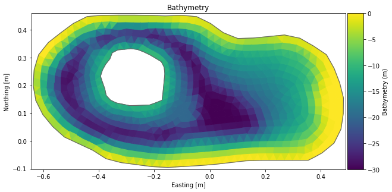
msh.plot.mesh();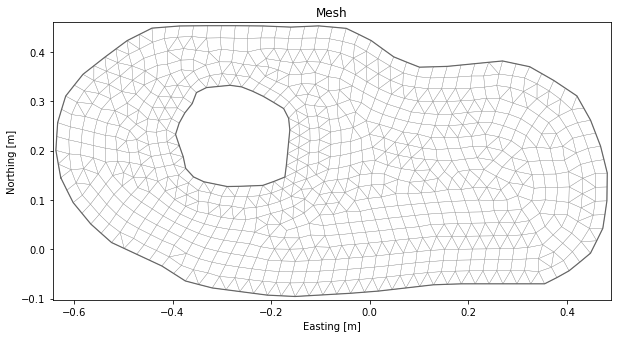
msh.plot(vmin=-30);
msh.plot.contour(show_mesh=True, levels=16, cmap='tab20', vmin=-30);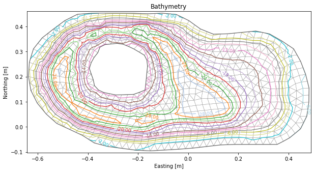
msh.plot(plot_type='contourf', show_mesh=True, levels=6, vmin=-30);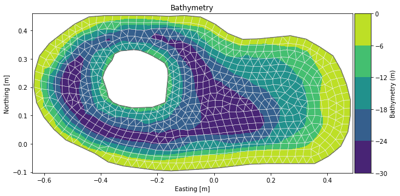
msh.plot(plot_type='shaded', show_mesh=False, vmin=-30);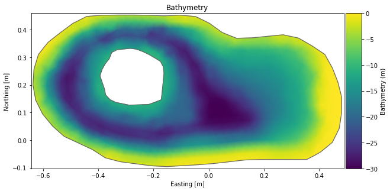
msh.plot(plot_type='shaded', add_colorbar=False);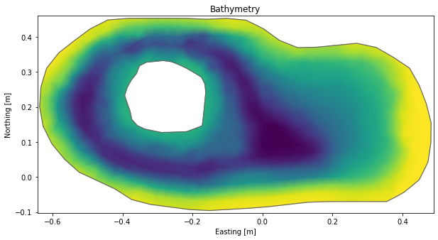
msh.plot(plot_type='patch', elements=range(400,600), vmin=-30, figsize=(4,6));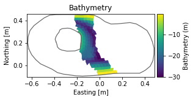
fig, ax = plt.subplots(3,2)
msh.plot(title='patch', ax=ax[0,0]);
#msh.plot.contourf(title='contourf', show_mesh=False, levels=[-30,-24,-22,-10,-8], ax=ax[0,1]);
msh.plot.contourf(title='contourf', levels=5, ax=ax[0,1]);
msh.plot(plot_type='shaded', title='shaded', ax=ax[1,0]);
msh.plot.contour(title='contour', show_mesh=True, levels=6, vmin=-30, ax=ax[1,1]);
msh.plot.mesh(title='mesh_only', ax=ax[2,0]);
msh.plot.outline(title='outline_only', ax=ax[2,1]);
plt.tight_layout()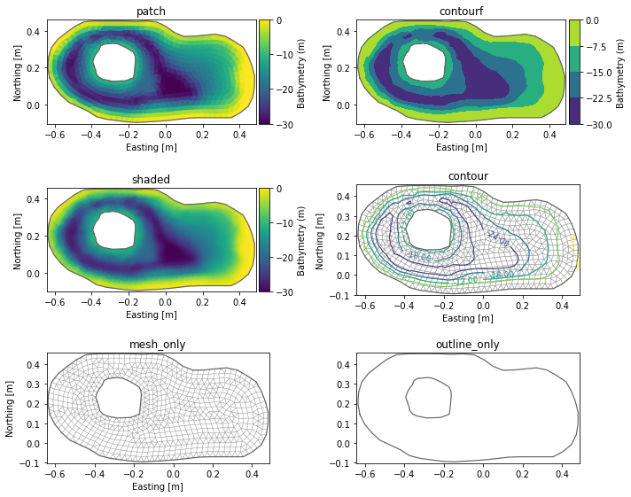
Plot data from surface layer of 3d dfsu file
filename = "../tests/testdata/oresund_sigma_z.dfsu"
dfs = mikeio.open(filename)
dfsDfsu3DSigmaZ
number of elements: 17118
number of nodes: 12042
projection: UTM-33
number of sigma layers: 4
max number of z layers: 5
items:
0: Temperature <Temperature> (degree Celsius)
1: Salinity <Salinity> (PSU)
time: 3 steps with dt=10800.0s
1997-09-15 21:00:00 -- 1997-09-16 03:00:00da = dfs.read(items="Salinity", layers="top", time=0)[0]
da<mikeio.DataArray>
name: Salinity
dims: (element:3700)
time: 1997-09-15 21:00:00 (time-invariant)
geometry: Dfsu2D (3700 elements, 2090 nodes)
values: [22.16, 21.16, ..., 21.27]da.plot(cmap='plasma');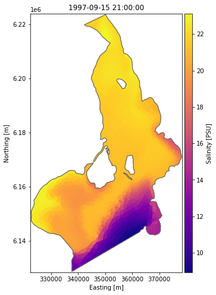
da.plot(add_colorbar=False);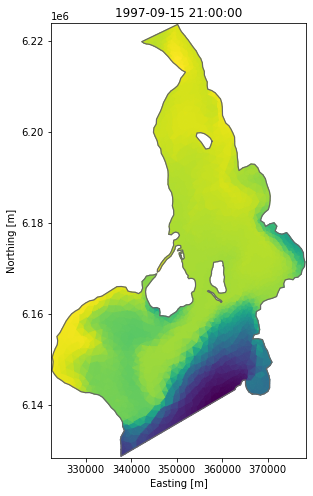
ax = da.plot.contour(show_mesh=True, cmap='tab20', levels=[11,13,15,17,18,19,20,20.5])
ax.set_ylim(6135000,6160000);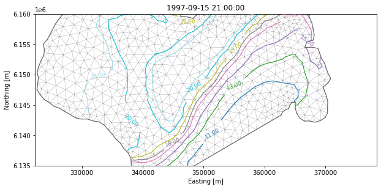
plot data from a z-layer
da = dfs.read(items="Salinity", layers=3, time=0)[0]
da<mikeio.DataArray>
name: Salinity
dims: (element:528)
time: 1997-09-15 21:00:00 (time-invariant)
geometry: Dfsu2D (528 elements, 378 nodes)
values: [20.81, 22.55, ..., 22.45]ax = da.plot(cmap='plasma');
dfs.geometry.plot.outline(ax=ax, title=None);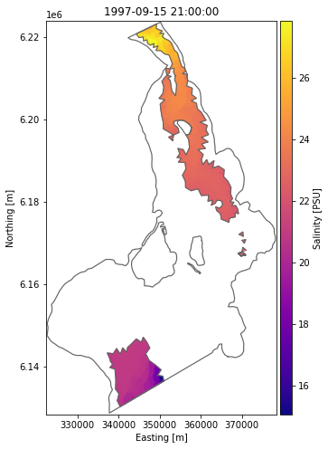